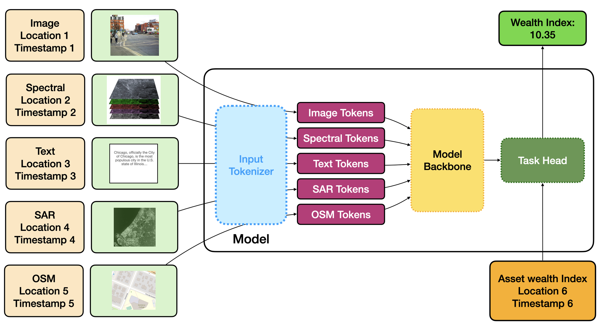
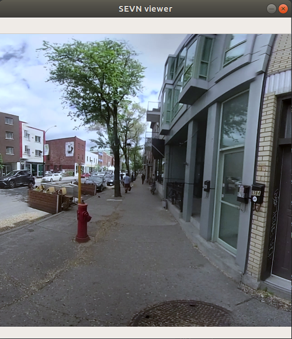
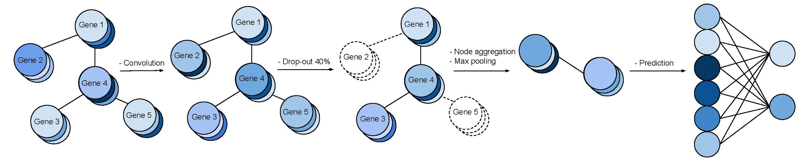
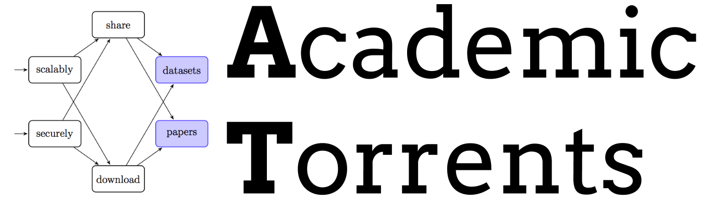
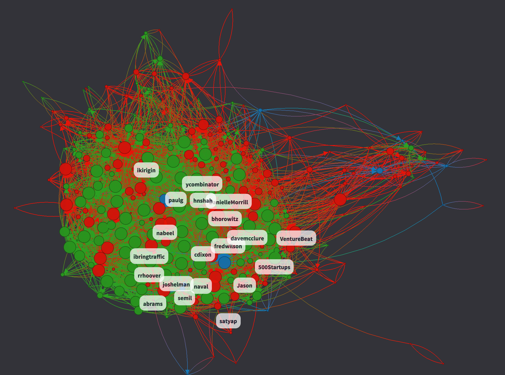
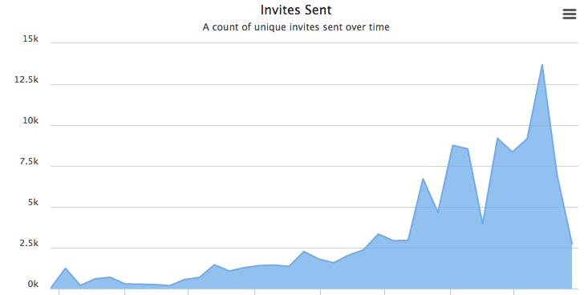

Geospatial Algorithm for Multi-Modal Applications (GAMMA)

Technologies: Python, PyTorch
Authors: Martin Weiss
Description: Multi-modal neural models trained on web-scale datasets of natural images and text have produced impressive results in applications ranging from novel image synthesis to image-and-text dialogue. While these models are more flexible and general than existing ImageNet models, the training data is not indexed on a spatiotemporal basis. This limits the ability of the model to contextualize new data, and to understand the physical processes that enable life and civilization on earth.
Links: Project overview
Sidewalk Environment for Visual Navigation & Navigation Assistant for the Visually Impaired

Technologies: Python, PyTorch
Authors: Martin Weiss, Simon Chamorro, Roger Girgis, Margaux Luck, Samira E. Kahou, Joseph P. Cohen, Derek Nowrouzezahrai, Doina Precup, Florian Golemo, Chris Pal
Description: SEVN contains around 5,000 full panoramic images and labels for house numbers, doors, and street name signs, which can be used for several different navigation tasks. Agents trained with SEVN have access to variable-resolution images, visible text, and simulated GPS data to navigate the environment. The SEVN Simulator is OpenAI Gym-compatible to allow the use of state-of-the-art deep reinforcement learning algorithms. Our codebase to train multi-modal agents on SEVN, which can take in images, scene-text, and gps to navigate to goal addresses, is available here. An instance of the simulator using low-resolution imagery can be run at 400-800 frames per second on a machine with 2 CPU cores and 2 GB of RAM.
Links: SEVN | SEVN-model | Paper published at CoRL 2019
Gene Graph Convolutions

Technologies: Python, PyTorch
Authors: Francis Dutil*, Joseph Paul Cohen*, Martin Weiss, Georgy Derevyanko, Yoshua Bengio
Description: A research codebase developed to incorporate gene interaction graphs as a prior for neural networks. With it, you can load a gene expression dataset like The Cancer Genome Atlas (TCGA) and a gene interaction graph like GeneMania, then instantiate a Graph Convolutional Neural Network using the structure of the gene interaction graph and train it on your gene expression data.
Links: Github | Arxiv Paper
Academic Torrents Python SDK

Technologies: Python
Authors: Martin Weiss, Joseph Paul Cohen
Description: A custom implementation of the BitTorrent Protocol in Python with minimal external libraries for downloading datasets from the AcademicTorrents network.
Links: AcademicTorrent, Github
TwinMaps (Twitter In-Maps)

Technologies: Flask, PostgreSQL
Authors: Martin Weiss, Ivan Kirigin
Description: Social graph visualization tool for Twitter
Impact: 1,000's of users, 200+ votes on ProductHunt
Links: ProductHunt
YesGraph

Technologies: Flask, PostgreSQL,
Authors: Martin Weiss, Ivan Kirigin, Mayank Juneja, Carolyn Lee, Kendall Chuang
Description: Recommender system using a social graph to find high-value invitations. API and SDKs to facilitate access.
Impact: 100k+ invites sent per month.
Links: crunchbase
Silent Disco Squad
GREENBEATS
Technologies: Objective-C + Golang
Authors: Martin Weiss, Naziha Mestaoui, & George Macrae
Description: Take 5 minutes with this app and synchronize your breath and heartbeat with users around the world.
Impact: Consulted with Naziha Mestaoui about her 1heart1tree project and developed a prototype.
AgCV
Technologies: Ionic Framework + Python + Intense Hardware
Authors: Martin Weiss & Trevor Stanhope
Description: Semi-autonomous guidance system for row-crop cultivators.
Impact: Shipped iOS and Android app to store. Guidance system is in the field, and being assessed for acquisition.
Links: github
LORIS
Technologies: MySQL, PHP, HTML/CSS/JS
Authors: Martin Weiss & McGill Centre for Integrative Neuroscience
Description: LORIS (Longitudinal Online Research and Imaging System) is a web-based data and project management software for neuroimaging research studies.
Impact: Nearly 100 commits on the front-end of a research management platform storing terabytes of medical data for 10,000+ patients.
Links: github
Ecstatic
Technologies: Node.js, Angular, Redis, Jade, S3
Authors: Martin Weiss, Jonathan Dupre, David Hernon, & David Zangwill
Description: An application for sharing music with your friends. Share your experience with looping videos. Web and Mobile.
Impact: Used at McGill X-1's Demo Day.
Links: github